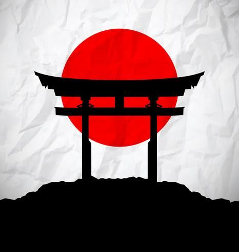
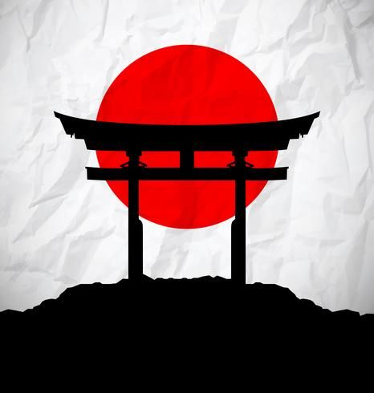
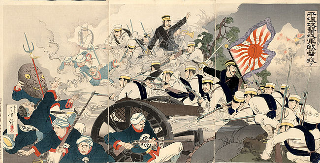

13.40.04_e97e6e93.jpg) 


A história do Japão é rica e complexa, marcada por uma série de períodos que moldaram a cultura e a sociedade do país, mudando e diferenciando o japão de outras potencias mundiais, como por exemplo, o japão teve diversas guerras e implicações que foram :
Antiguidade e Formação Inicial Primeiros Habitantes: O Japão foi originalmente habitado pelos povos Jomon (c. 14.000 a.C. a 300 a.C.), conhecidos por sua cerâmica ornamentada e um estilo de vida baseado na caça e na coleta.
Período Feudal (1185-1603) Xogunatos Kamakura e Muromachi: A partir do século 12, o Japão passou a ser governado por xoguns (líderes militares), começando com o xogunato Kamakura (1185-1333), que marcou o início do feudalismo no país. Durante esse período, os samurais, a classe militar, se tornaram os principais defensores do país.
A Segunda Guerra Mundial teve um impacto profundo e devastador no Japão, que foi um dos principais beligerantes do conflito, lutando ao lado das Potências do Eixo (Alemanha e Itália). A história do Japão durante a guerra pode ser dividida em várias fases importantes, que abrangem desde a sua entrada no conflito até a rendição final e a ocupação americana após a guerra.
Entre outros marcos historicos do japao.
